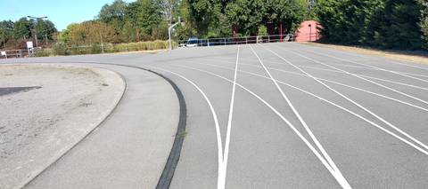
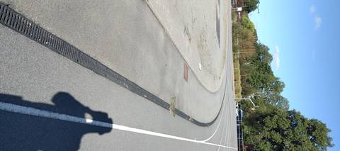
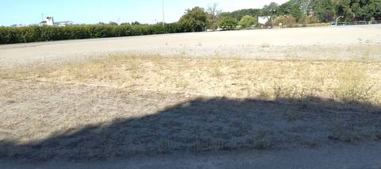
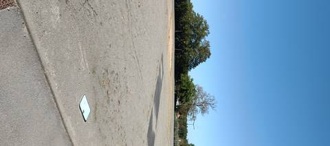

{kind=link}
{kind=link}
{kind=link}
{kind=link}
Un anneau en enrobé de 250 m, mesurés à la montre GPS, et son seul luxe est d'être toujours accessible : ni portail ni panneau, on entre à pied et on court. L'entretien s'arrête là — le terre-plein central n'est plus qu'une aire de gravier nu. Le marquage, lui, est encore net : cinq couloirs parfaitement lisibles. Il y a de quoi faire autre chose que tourner en rond : deux sautoirs en longueur, avec du sable dans les deux, et une aire de lancer du poids. Des caniveaux à grille courent le long de la corde et évacuent l'eau. À réserver au travail au chrono quand la vraie piste est fermée, c'est-à-dire souvent.
Complexe Sportif de Bellestre
Route du Tour, 44830 Bouaye · Loire-Atlantique
Complexe Sportif de Bellestre is an athletics venue in Bouaye (Loire-Atlantique), Pays de la Loire, France. It has a 250 m asphalt / tarmac running track with 5 lanes. The ministry's register classes it as a standalone track: it is not part of an athletics stadium. It also offers long jump pit and shot put. The venue provides floodlighting, changing rooms and showers. Access is free and unrestricted.
Photos




A photo is surely still missing
Jump pits and throwing areas are what public data describes worst, and what gets photographed least. A close-up of the ground, a covered vault pit, a sand box gone to weeds: each adds what no field carries.
Send a photoNo GitHub account?Track
- Surface
- Asphalt / tarmac
- Lap length
- 250 m
- Track type
- Standalone track
- Lanes
- 5
- Setting
- Outdoor
- Opened
- 1981
- Last refurbished
- 2021
Recorded facilities
- Long jump pit
- Shot put
Access & amenities
- Free access
- Yes
- Floodlighting
- Yes
- Changing rooms
- Yes
- Showers
- Yes
- Toilets
- Yes
Aucun portail, aucun panneau, aucun horaire affiché : on entre à pied et on court (constaté le 5 septembre 2026). Vestiaires, douches et sanitaires sont annoncés par le recensement ; aucun n'a été vu ouvert.
Athlete reviews
Visite du 5 septembre 2026. Les 250 m ont été relevés à la montre GPS sur un tour, ce qui confirme l'estimation tirée du tracé OpenStreetMap (r15018498) : le développement passe donc d'estimé à mesuré. Revêtement en enrobé, foulé sur place et non déduit d'une couleur vue du ciel. Cinq couloirs tracés, au marquage blanc encore net alors que le reste ne l'est plus : le terre-plein central n'est qu'une aire de gravier nu, et de la végétation remonte par endroits le long de la corde. Un caniveau à grille court sur tout le pourtour intérieur de l'anneau et évacue l'eau. Deux sautoirs en longueur, garnis de sable, et une aire de lancer du poids. Une bande d'enrobé sombre bordée de blanc traverse le terre-plein ; sa fonction n'a pas été identifiée sur place.
Other venues in the department
- Stade Patrick Perrais
- Piste de Saint-Léger-les-Vignes
- Complexe Sportif de la Croix Jeannette
- Plateau Sportif de la Bourgonniere
- Complexe Sportif Paul Langevin
- Complexe Sportif Leo Lagrange
Report an error or complete this record
Réf. I440180012 · Source: Data ES + community — Data ES, French ministry for sport, Licence Ouverte 2.0. Records are self-declared and may be incomplete: check access conditions before travelling.